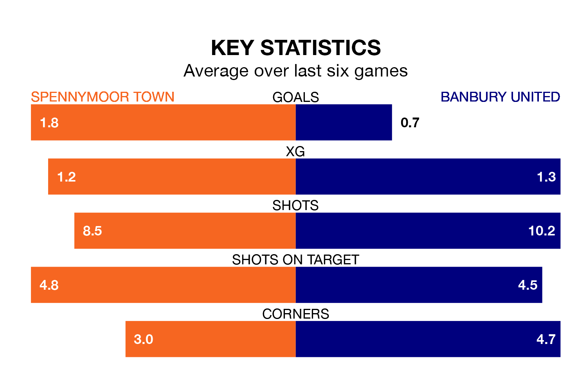

Spennymoor Town are heavy favourites to keep all three points at home in Tuesday's late kick-off against Banbury United.
Spennymoor, who sit 10th in the National League North with 43 games played, are priced at 1.2 to seal victory at the Brewery Field.
Sitting 12 places and 30 points behind them in the table, Banbury are 8.8 to win with *Betting Company*, while the draw is at 5.2.
Spennymoor are in good form in the National League North, with four wins and a draw from their last six games.
With no wins and a draw over that period, Banbury's form is much worse – they have taken one point from 18, compared to Town's 13.
With 36 goals in 42 games so far this season, United are the league's second-lowest scorers with 0.9 goals per game. And they are conceding more than average, letting in 74 goals at a rate of 1.8 per game.
The home side, meanwhile, are above average scorers, with 1.5 goals per game, compared to a league average of 1.3. They have conceded 1.3 goals per game.
In the last three years, Spennymoor and Banbury have played each other on three occasions. Spennymoor won all of them.
Their last meeting was on August 5, when Spennymoor won 3-0 away.
Spennymoor's last match was on Saturday, a 1-1 draw against Scarborough Athletic.
Banbury drew 1-1 with King's Lynn Town last time out, also on Saturday.
Updated: 14:47 (UTC), 09/04/24